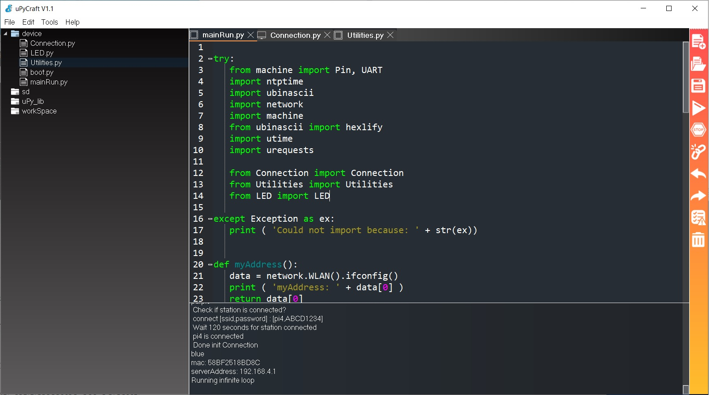
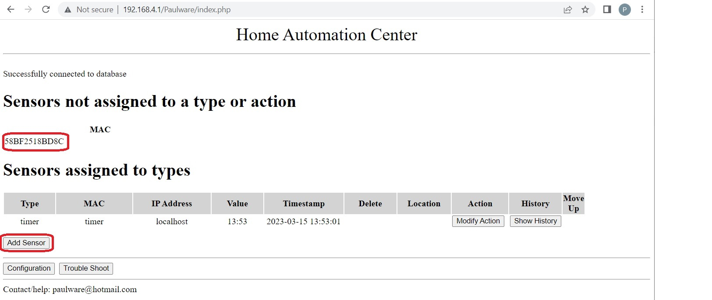

In this test we will load an esp32 with a dummy program. It should login to the network
Its MAC address will then be added to the table of lostSensors
You will then be able to add it to the system
- Connect an esp32 to your usb drive and run uPyCraft
- Select the com port for the esp32
- Open the files: Connection.py, Utilities.py, and LED.py located in the microPython/esp32 directory

- Load the files onto the esp32 using the play symbol
- Load mainRun.py from the microPython/esp32/test1 directory
- Run mainRun.py
- Add its MAC address to the system

This concludes the first basic test